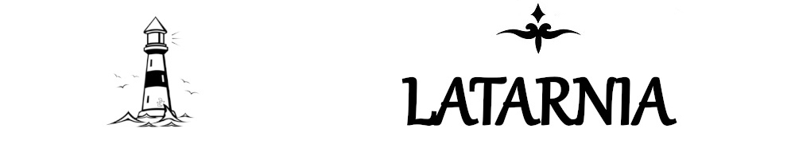

STRONA GŁÓWNA
ŚWIĘTE KSIĘGI
KĄCIK KATOLICKI
KĄCIK FILOZOFICZNY
KĄCIK RÓŻNOŚCI
KĄCIK CZASOPISM
KĄCIK AMATORSKI
LATARNIK
KONTAKT
O tym czym jest Lumen Poloniae przeczytasz
tutaj
.
czasopismo zamknięte
lp20142.pdf
lp20141.pdf
lp20132.pdf
lp20131.pdf
lp20122.pdf
lp20121.pdf
lp20112.pdf
lp20111.pdf
lp20102.pdf
lp20101.pdf
lp20092.pdf
lp20091.pdf
lp20082.pdf
lp20081.pdf
lp20072.pdf
lp20071.pdf
Latarnia 2019 © Wszelkie prawa zastrzeżone.